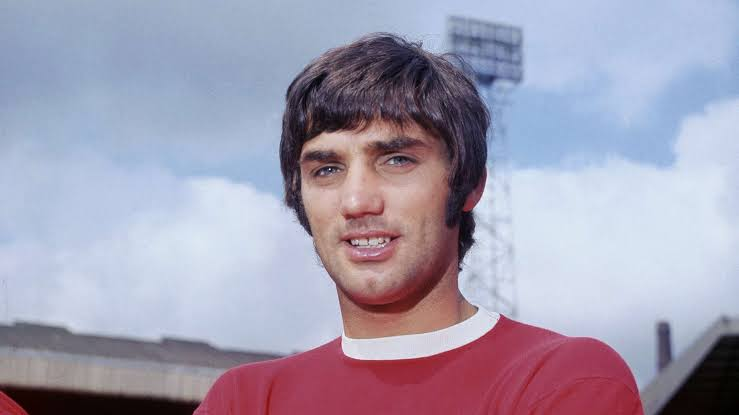

George Best – The Belfast Boy
Full Name: George Best
Date of Birth: May 22, 1946
Place of Birth: Belfast, Northern Ireland
Date of Death: November 25, 2005
Position: Winger / Forward
Clubs: Manchester United, Fulham, Hibernian, and others
National Team: Northern Ireland
Career Highlights
- Played for Manchester United (1963–1974)
- Won the Ballon d'Or in 1968
- European Cup Winner (1968)
- Two-time English First Division Champion
- Scored 179 goals in 470 club appearances
Playing Style
- Deadly finisher with both feet
- Fast and agile, could beat defenders with ease
- High football IQ
- Entertaining and unpredictable moves
Quotes
“Maradona good. Pelé better. George Best.” – Manchester graffiti
“I spent a lot of money on booze, birds, and fast cars. The rest I just squandered.” – George Best
Legacy
- One of football's greatest natural talents
- Known for charisma and rock-star lifestyle
- Passed away in 2005, remembered as a legend
- Belfast City Airport is named after him

← Back to Football Index